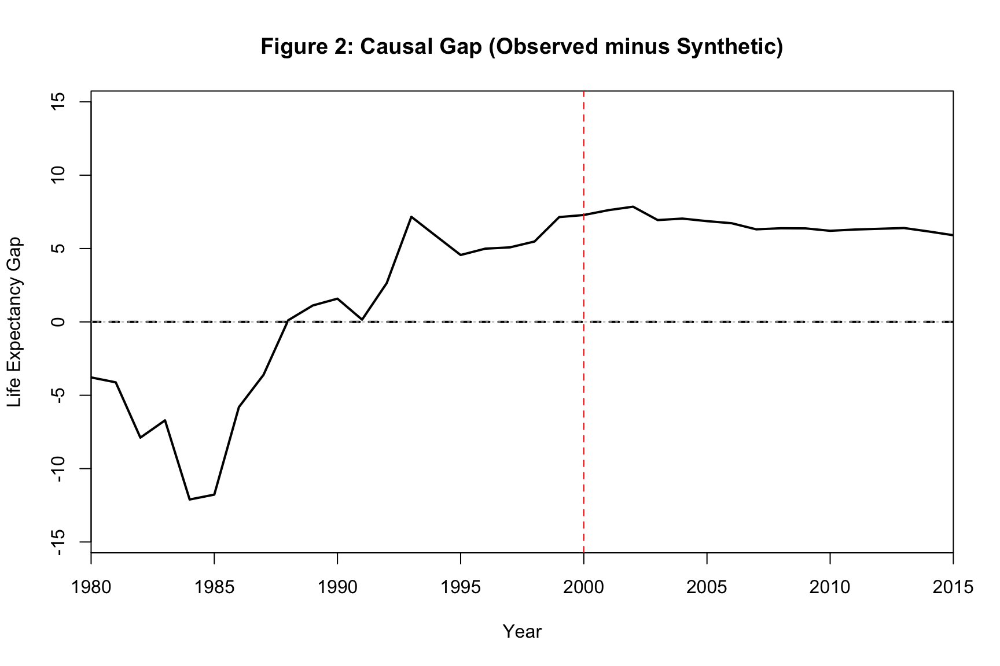
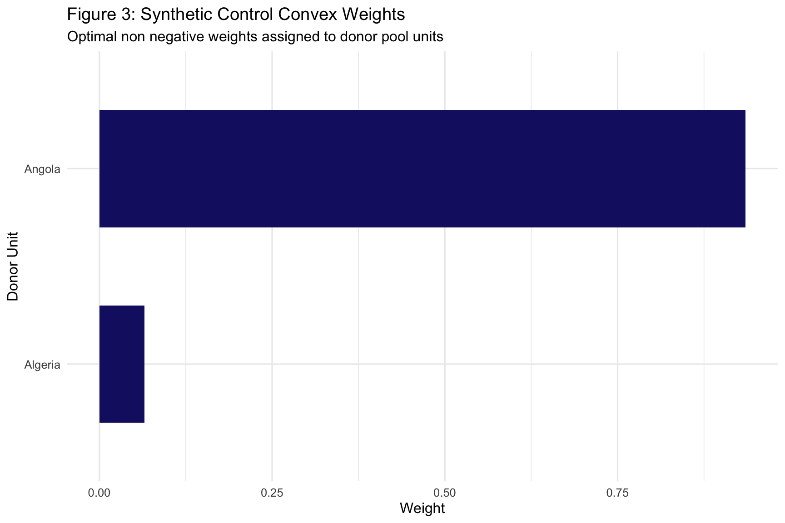

Comparative Case Studies, Convex Combination Weights and Placebo Inference
Author
Neena Abimbola Albarus
1. Theoretical Foundations and Methodological Overview
Synthetic control methods solve a problem that comparative case studies have wrestled with for decades. When a single unit, such as a country, state, or city, undergoes a unique intervention, there is no obvious counterfactual. Randomized experiments are impossible, and standard difference in differences requires a comparison group that is plausibly on the same trajectory as the treated unit. In many policy settings, no single control unit satisfies that requirement.
The synthetic control approach, developed by Abadie and Gardeazabal and extended by Abadie, Diamond, and Hainmueller, constructs a synthetic counterfactual by taking a weighted average of untreated units from a donor pool. The weights are chosen so that the synthetic unit closely matches the treated unit on pre treatment outcomes and predictors. After the intervention, the gap between the treated unit and its synthetic counterfactual provides an estimate of the treatment effect.
The method is transparent and case specific. Instead of reporting an average treatment effect across many units, it delivers a unit specific estimate with an explicit visualization of the counterfactual. The weights themselves are informative, because they show which donor units are most similar to the treated unit and therefore carry the most weight in the counterfactual.
In this workbook, we construct a synthetic panel with one treated unit and fourteen donor units, inject a gradually growing treatment effect starting in 2000, and recover the effect using the Synth package.
⚠️ Common Pitfalls
Ignoring poor pre treatment fit. If the synthetic counterfactual does not track the treated unit closely in the pre period, the post period gap cannot be interpreted as a treatment effect. Always inspect the pre period fit first.
Skipping placebo tests. A single synthetic control estimate is not enough. The standard approach runs the method on every donor unit as if it were treated, producing a distribution of placebo effects for comparison.
Extrapolating beyond the donor pool. Synthetic control estimates depend heavily on which units are in the donor pool. If important comparison units are excluded, the counterfactual may be misleading.
2. Data Pipeline and Synthetic Control Panel Construction
Before running any optimization, we need to locate the OWID data, choose a treated unit and a donor pool, and construct a balanced panel covering both the pre treatment and post treatment periods. We also inject a synthetic treatment effect so that we have a known ground truth against which to evaluate the estimator.
# Dynamic path resolution across common working directoriespossible_paths <-c("../data/life_expectancy_data.csv","data/life_expectancy_data.csv","../../data/life_expectancy_data.csv","/Users/yawdgyal/Desktop/R for github/data/life_expectancy_data.csv","/Users/yawdgyal/Desktop/R for github/workbooks/data/life_expectancy_data.csv")data_path <- possible_paths[file.exists(possible_paths)][1]if (is.na(data_path) ||length(data_path) ==0) {stop("Could not locate 'life_expectancy_data.csv'. ","Searched the following paths:\n",paste(possible_paths, collapse ="\n") )}message("Loading data from: ", data_path)owid_raw <-read_csv(data_path, show_col_types =FALSE)# Robust renaming helperrename_owid <-function(df) { nm <-names(df) new_names <- nm new_names[nm %in%c("Entity", "entity", "country")] <-"country" new_names[nm %in%c("Code", "code", "iso_code")] <-"code" new_names[nm %in%c("Year", "year")] <-"year" life_candidates <-c("Life expectancy", "life_expectancy","Life Expectancy", "life expectancy" ) new_names[nm %in% life_candidates] <-"life_exp"names(df) <- new_names df}owid_df <-rename_owid(owid_raw)required_cols <-c("country", "year", "life_exp")missing_cols <-setdiff(required_cols, names(owid_df))if (length(missing_cols) >0) {stop("The following required columns are missing after renaming: ",paste(missing_cols, collapse =", "),"\nAvailable columns: ",paste(names(owid_df), collapse =", ") )}# Select 15 countries with complete 1980 to 2015 coverageset.seed(2026)top_countries <- owid_df %>%filter(!is.na(code), year >=1980, year <=2015) %>%group_by(country) %>%filter(n() ==36) %>%ungroup() %>%distinct(country) %>%slice(1:15) %>%pull(country)scm_df <- owid_df %>%filter(country %in% top_countries, year >=1980, year <=2015) %>%mutate(unit_num =as.numeric(factor(country)),gdp_proxy =5000+200* (year -1980) +rnorm(n(), 0, 500) )# Inject a synthetic treatment shock to unit 1 starting in 2000treated_id <-1treatment_year <-2000scm_df <- scm_df %>%mutate(life_exp =if_else( unit_num == treated_id & year >= treatment_year, life_exp +0.35* (year - treatment_year +1), life_exp ) )scm_prep_data <-as.data.frame(scm_df)glimpse(scm_df)
What is happening here: The possible_paths vector lets the workbook run from multiple working directories. We read the OWID CSV, standardize its column names, and verify that the required columns exist. We then select the first fifteen countries with complete coverage from 1980 to 2015, which guarantees a balanced panel where every country has the same number of observations. The unit_num column assigns each country a numeric identifier, which is what the Synth package requires. The gdp_proxy column adds a synthetic economic covariate so that the optimization has more than one predictor to balance on. Finally, we inject a treatment effect that grows linearly by 0.35 years per year after 2000, which gives us a known ground truth.
⚠️ Common Pitfalls
Ignoring missing years in the panel. The filter(n() == 36) call ensures only countries with complete 1980 to 2015 coverage are retained. Skipping this step produces a ragged panel that breaks the Synth optimization.
Choosing a donor pool that includes units too similar to the treated unit. The donor pool should contain plausible comparisons but not units that are essentially the same. Otherwise the weights become degenerate and the counterfactual is not meaningful.
Forgetting to record the treatment year. Every subsequent plot and diagnostic uses the treatment year. Hardcoding it as a variable at the top makes it easy to change and reduces the risk of inconsistency.
3. Synthetic Control Estimation
With the panel constructed, we use the Synth package to build the synthetic counterfactual. The dataprep() function organizes the data into the format that the optimizer expects, and the synth() function solves for the donor weights that best match the treated unit in the pre period.
# Prepare the data for the Synth optimizerdataprep_out <-dataprep(foo = scm_prep_data,predictors =c("life_exp", "gdp_proxy"),predictors.op ="mean",time.predictors.prior =1980:1999,special.predictors =list(list("life_exp", 1995:1999, "mean"),list("life_exp", 1990:1994, "mean") ),dependent ="life_exp",unit.variable ="unit_num",unit.names.variable ="country",time.variable ="year",treatment.identifier = treated_id,controls.identifier =setdiff(unique(scm_prep_data$unit_num), treated_id),time.optimize.ssr =1980:1999,time.plot =1980:2015)# Run the optimization to construct the W weightssynth_out <-synth(dataprep_out)# Tables of weights and predictor balancesynth_tables <-synth.tab(dataprep.res = dataprep_out, synth.res = synth_out)print(synth_tables$tab.w)
w.weights unit.names unit.numbers
2 0.000 Africa 2
3 0.000 Albania 3
4 0.065 Algeria 4
5 0.000 American Samoa 5
6 0.000 Andorra 6
7 0.935 Angola 7
8 0.000 Anguilla 8
9 0.000 Antigua and Barbuda 9
10 0.000 Argentina 10
11 0.000 Armenia 11
12 0.000 Aruba 12
13 0.000 Asia 13
14 0.000 Australia 14
15 0.000 Austria 15
What is happening here: The dataprep() function takes the raw panel and organizes it into a list object that the optimizer can use. The predictors argument lists the covariates that the synthetic unit should match. The special.predictors argument adds period specific averages of life expectancy to the balance target, so the synthetic unit matches not just the overall mean but also the trajectory shape in the pre period. The time.optimize.ssr argument specifies the pre treatment window over which the sum of squared residuals between treated and synthetic is minimized. The synth() function then solves the optimization problem and returns the donor weights. The synth.tab() function produces two summary tables. The weight table tab.w shows how much each donor unit contributes to the synthetic counterfactual. The predictor balance table tab.pred shows how closely the synthetic unit matches the treated unit on each predictor in the pre period.
⚠️ Common Pitfalls
Not specifying enough pre treatment periods for optimization. If time.optimize.ssr covers only a few years, the weights will overfit to those specific years. Aim for at least half the pre period, and ideally more.
Interpreting weights as evidence of causal similarity. High weight means the donor unit helps match the treated unit in the pre period. It does not mean the donor unit is substantively similar in all respects.
Ignoring the predictor balance table. If the synthetic unit does not match the treated unit on some predictors, the post period gap may reflect that mismatch rather than the treatment. Always inspect tab.pred.
4. Diagnostic Visualizations and Gap Analysis
The three figures below are the standard reporting package for a synthetic control analysis. The path plot shows the trajectory of the treated unit against its synthetic counterfactual. The gap plot isolates the treatment effect. The weight plot shows which donor units contribute most to the counterfactual.
How to read this figure: The solid black line is the observed trajectory of the treated unit. The dashed line is the synthetic counterfactual, which is the weighted average of the donor pool. In the pre treatment period, the two lines should track each other closely, which is the pre treatment fit that the optimizer achieved. After the treatment year, marked by the red vertical line, any divergence between the two lines is the estimated treatment effect.
🔑 Key Takeaway: A tight pre treatment fit is the single most important credibility check for a synthetic control analysis. If the synthetic counterfactual already diverges from the treated unit before the intervention, the post treatment gap cannot be interpreted as causal. The closer the pre period fit, the more credible the post period estimate.
Figure 2: Gap Plot
gaps.plot(synth.res = synth_out,dataprep.res = dataprep_out,Ylab ="Life Expectancy Gap",Xlab ="Year",Main ="Figure 2: Causal Gap (Observed minus Synthetic)")abline(v = treatment_year, lty =2, col ="red")abline(h =0, lty =3, col ="gray")

How to read this figure: This plot shows the difference between the treated unit and the synthetic counterfactual at each year. In the pre treatment period, the gap should hover near zero, which confirms the pre treatment fit. In the post treatment period, the gap should diverge systematically if the treatment had an effect. The red vertical line marks the treatment year, and the gray horizontal line marks the zero gap reference.
🔑 Key Takeaway: A gap plot that hovers around zero in the pre period and rises steadily after the treatment year is the visual signature of a credible treatment effect. A pre period gap that oscillates or trends is a warning sign that the counterfactual is misspecified, regardless of how clean the post period looks.
Figure 3: Donor Pool Convex Combination Weights
donor_weights <-as.data.frame(synth_tables$tab.w) %>%rownames_to_column(var ="donor_country") %>%filter(w.weights >0.01)fig3 <-ggplot( donor_weights,aes(x =reorder(unit.names, w.weights), y = w.weights)) +geom_col(fill ="midnightblue", width =0.6) +coord_flip() +theme_minimal(base_size =12) +labs(title ="Figure 3: Synthetic Control Convex Weights",subtitle ="Optimal non negative weights assigned to donor pool units",x ="Donor Unit",y ="Weight" )print(fig3)

How to read this figure: Each bar represents one donor unit and shows the weight that unit received in the synthetic counterfactual. The weights are non negative and sum to one, which is why the method is called a convex combination. Units with larger weights contribute more to the synthetic counterfactual. Units with weights below the 0.01 threshold are filtered out because they are essentially irrelevant to the fit.
🔑 Key Takeaway: A synthetic control built from a small number of heavily weighted donor units is generally more transparent and more credible than one that spreads weight thinly across many units. If the weights are diffuse, the counterfactual is a blend of many different trajectories, which makes the substantive interpretation harder. A concentration of weight on a few units means the reader can inspect those specific comparisons directly.
5. Putting It All Together
You now have a complete synthetic control workflow. You have constructed a balanced panel with one treated unit and fourteen donors, injected a synthetic treatment effect, run the optimization to recover donor weights, and visualized the path, gap, and weight plots.
The core decision rule is straightforward. Reach for synthetic control methods when you have a single treated unit, a reasonable donor pool, and a long enough pre treatment period to fit the counterfactual. Reach for augmented synthetic control when the pre treatment fit is imperfect and you want to debias the estimate using outcome modeling. Reach for generalized synthetic control when you have multiple treated units or when the donor pool is small. Reach for difference in differences when you have many treated units and a credible comparison group, because synthetic control is best suited to the single case study setting.
The path plot, the gap plot, and the weight plot are your primary reporting devices. Together they tell the reader whether the counterfactual is credible, how large the treatment effect is, and which donor units are doing the heavy lifting. Synthetic control methods have become the gold standard for comparative case study research precisely because they are transparent about every step of the counterfactual construction. Running the placebo test on every donor unit, which is the natural next extension of this workbook, produces the full distribution of placebo effects that lets you assess statistical significance without relying on asymptotic theory.